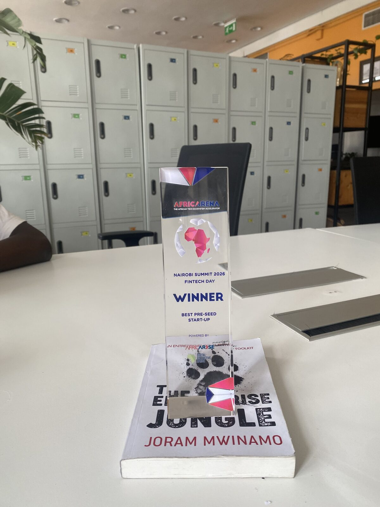
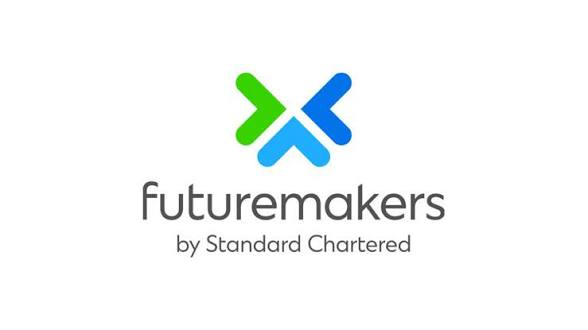
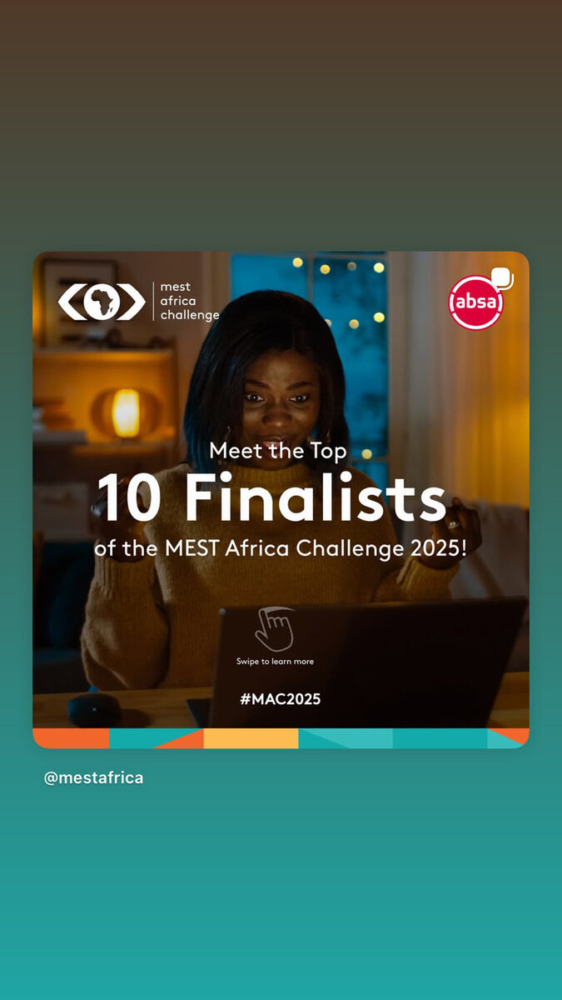
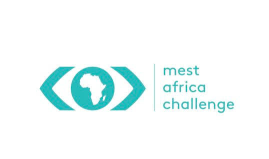
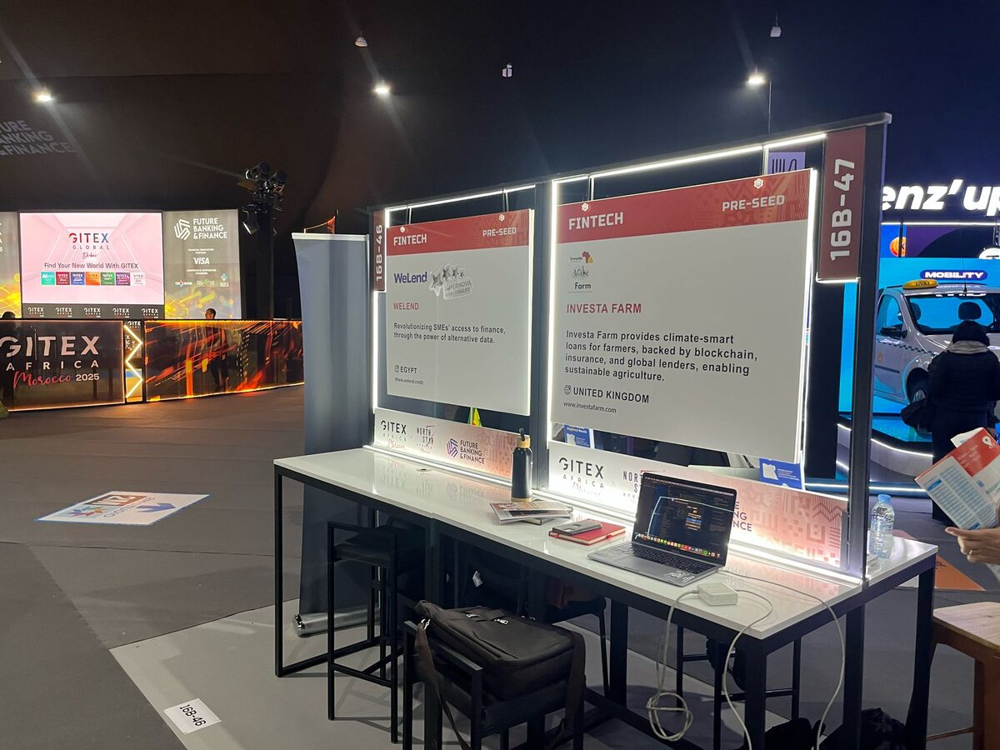
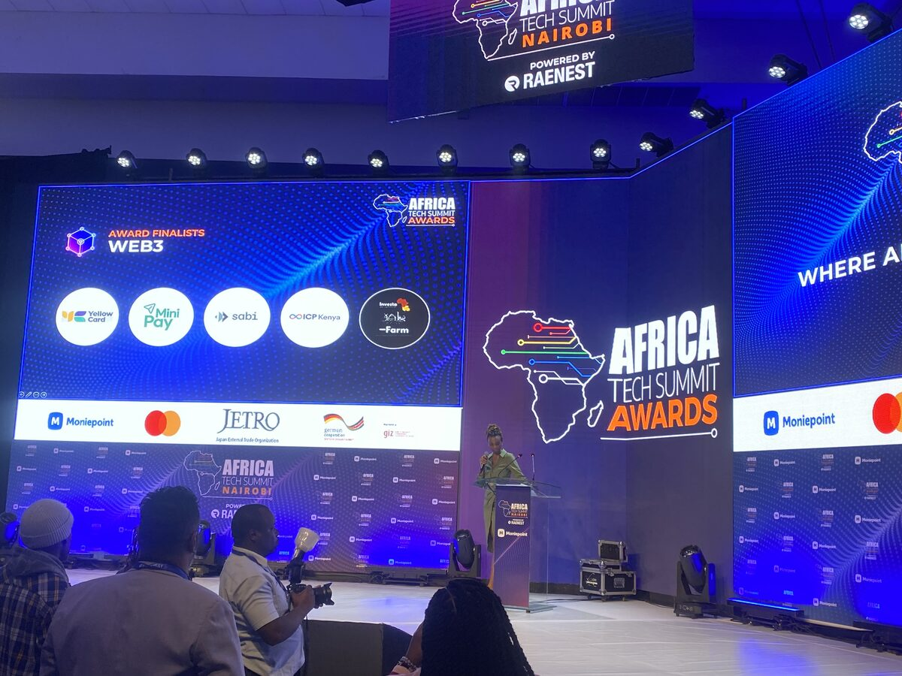

From idea to Africa's leading agri-fintech platform
Founded in Nairobi, Kenya
Moses Ochieng and Corrine Munyi co-founded Investa Farm in 2023 with a vision to structure agriculture like a stock exchange — allowing investors to buy farm shares and farmers to earn their fair share of harvest revenue. The platform was built and registered in both Kenya and the United Kingdom.
ygap Kenya Cohort
Investa Farm was selected for the ygap Kenya programme — a leading African startup accelerator — where the team refined the business model, validated the farmer revenue share approach, and built the initial platform architecture.
First Live Farm Listings & Startupbootcamp
The platform went live with its first farm listings in Kenya. Investa Farm was simultaneously selected for the Startupbootcamp FinTech Cohort 2024 in the Netherlands — one of the world's most competitive fintech accelerator programmes — validating the model globally.
Kenya Blockchain Conference & iBiz Women in Tech
Investa Farm received a Spotlight Certificate at the 2nd Kenya Blockchain & Crypto Conference for innovation in agricultural finance. Co-founder Corrine Munyi was selected for the prestigious iBiz Women in Tech programme by Standard Chartered Futuremakers.
MEST Africa Top 10 Finalist & GITEX Africa
Named a Top 10 Finalist at MEST Africa Challenge 2025 in Cape Town, competing among the best startups across Africa. Also selected to exhibit at GITEX Africa 2025 in Morocco — representing Investa Farm on the world stage in the Fintech Pre-Seed category.
Africa Tech Summit — Web3 Finalist
Shortlisted in the Web3 Award Category at Africa Tech Summit Nairobi — alongside Yellow Card, MiniPay, Sabi, and ICP Kenya. Recognised for pioneering the intersection of agricultural finance and digital infrastructure.
AfricArena Winner — Best Pre-Seed Startup
Investa Farm won Best Pre-Seed Startup at the AfricArena Nairobi Summit 2026 FinTech Day — Africa's premier tech ecosystem event. This marked the platform's recognition as a standout agri-fintech company at continental scale.
120,000+ Farmers, $4.8M Transacted
Today, Investa Farm has over 120,000 farmers in portfolio, $4.8M USD transacted, active operations in Kenya, the UK, and the USA — and a growing investor community spanning both continents.
The founders behind Investa Farm
Built by a team deeply rooted in African agriculture, technology, and financial inclusion — on a mission to make farm investment accessible to everyone.
Moses Ochieng
CEO & Co-founderTechnology entrepreneur and product builder with expertise in agricultural fintech and software engineering. Moses leads Investa Farm's product, technology, and strategy. ygap Kenya alumnus.
Corrine Munyi
Co-founderiBiz Women in Tech alumna — Standard Chartered Futuremakers programme, Strathmore University. Corrine drives Investa Farm's farmer partnerships, operations, and financial inclusion mission across Kenya and East Africa.
Recognised by Africa's top innovation platforms
Investa Farm has won awards, been selected for elite programmes, and exhibited at the world's biggest technology conferences across Africa, Europe, and beyond.

🏆 AfricArena Winner — Best Pre-Seed Startup
Won Best Pre-Seed Startup at the AfricArena Nairobi Summit 2026 FinTech Day — Africa's premier tech ecosystem accelerator. Powered by AFRIARISE.
Winner · FinTech Day · Nairobi 2026
🎖️ iBiz Women in Tech — Standard Chartered
Co-founder Corrine Munyi selected for and completed the iBiz Women in Tech programme by Standard Chartered Futuremakers, powered by Strathmore University.
#SCWomenInTech · Strathmore University

🌍 MEST Africa Finalist 2025
Named a Top 10 Finalist at the MEST Africa Challenge 2025 Finals in Cape Town — competing among the best startups across Africa.
Top 10 Finalist · Cape Town 2025
🌐 GITEX Africa Morocco 2025
Selected to exhibit at GITEX Africa 2025 in Morocco — representing Investa Farm in the Fintech Pre-Seed category alongside global companies.
GITEX Africa · Morocco 2025
🔗 Africa Tech Summit — Web3 Finalist
Shortlisted in the Web3 Award Category at Africa Tech Summit Nairobi — alongside Yellow Card, MiniPay, Sabi, and ICP Kenya.
Web3 Finalist · ATS Nairobi⛓️ Kenya Blockchain Conference 2024
Awarded a Spotlight Certificate at the 2nd Edition Kenya Blockchain & Crypto Conference 2024 for innovation in agricultural finance.
Spotlight Winner · Nairobi 2024🚀 Startupbootcamp Cohort 2024
Selected for the Startupbootcamp FinTech Cohort 2024 in the Netherlands — one of the world's top accelerator programmes for fintech companies.
SBC FinTech · Netherlands 2024🌱 AFRISE Challenge 2026
Selected for the AFRISE Challenge 2026 — powered by Concordia University and Hindsight Ventures — empowering African youth through entrepreneurship.
Entrepreneurship · Africa · Canada